Python 基礎課程1-程式語言介紹、環境建置
程式是一系列指令告訴電腦如何工作。學習程式可以在金融、醫療、工業領域發揮作用。Python是開放原始碼且擴充性強的程式語言，被廣泛使用。課程包括使用虎科大程式平台進行學習，推薦安裝Python和Visual Studio Code。線上編輯器Colab也是方便的工具。要掌握程式，修行在個人！
什麼是程式
撰寫一系列的指令(指令有特定的語法)，而這些指令告訴電腦如何執行工作。
電腦則是透過程式碼的指令，經由「輸入（input）→處理（processing）→輸出（output）」的流程(數位課本第一章)

學程式能做什麼
金融業
保險業：保險精算、保單管理、理賠處理
銀行：財富管理、巨量資料分析、無實體通路之行動商務服務
證券：量化交易、人工智能選股、交易系統
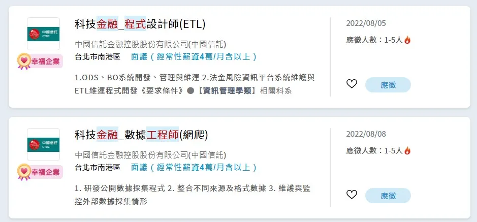
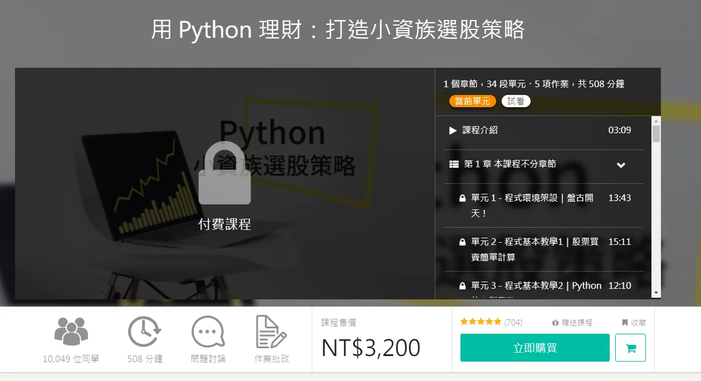
醫療業
醫療系統(掛號、門診、繳費到領藥)、電子病歷
新型態雲端醫療服務：自行在家量測→雲端紀錄病歷資料，降低人力成本
工業
工業4.0：透過人工智慧整合機械手臂、物聯網等工具改善工業流程與效率。
當然本課程只在基本功能介紹，我將完美呈現「師父領進門，修行在個人」
對產業只是稍作介紹，也可以追蹤一些新知識
https://www.dcard.tw/@markreadfintech
為什麼選Python
Python程式語言特色如下：
1.開放原始碼：無須費用
2.可擴充性：具有豐富的庫，可做擴充，你想要做視覺辨識？有！想做數據分析？有！想連結Google應用程式？也沒問題！因為在整合相當便捷，Python又叫做膠水語言
根據stackoverflow(程式人的知識+)統計，2022最常使用語言：
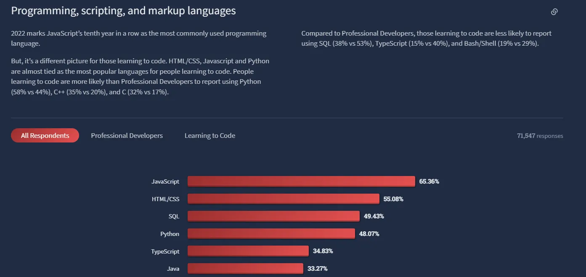
2024最常使用語言：

Google Trend搜尋
https://trends.google.com.tw/trends/
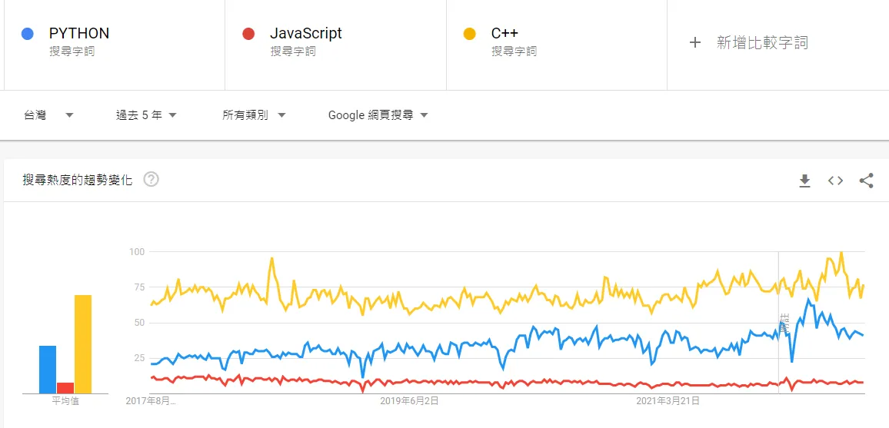
課堂作業
本課程使用虎科大程式平台，進行練習與考試評分：https://goclass.tw/
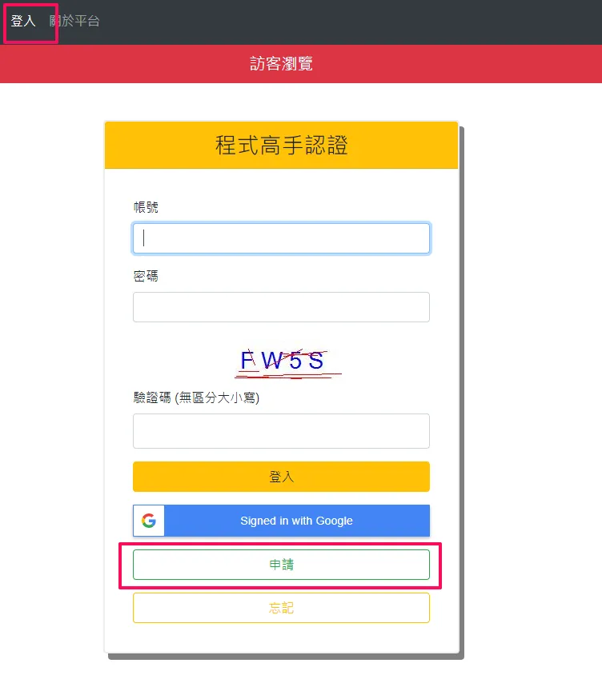
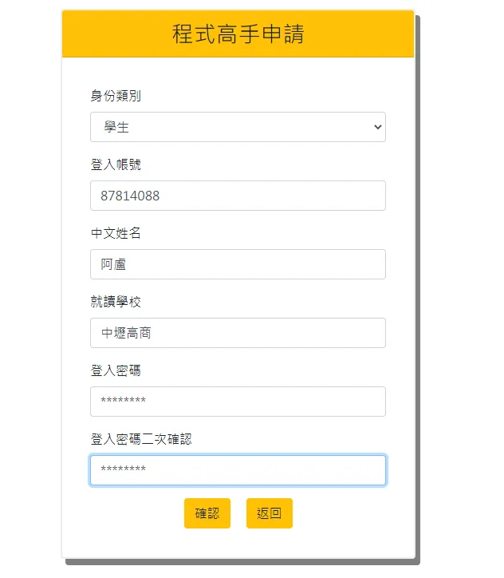
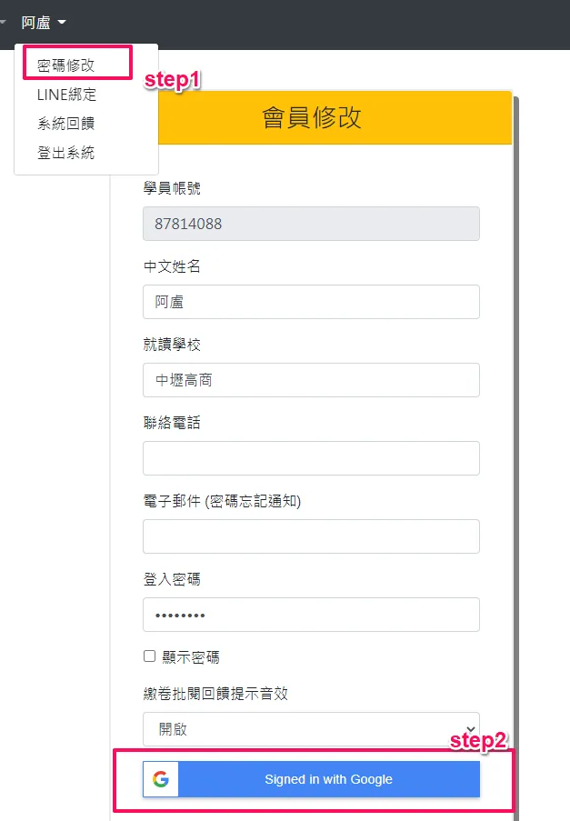
代號：DS411
輸入課程認證代碼後，點選註冊班級
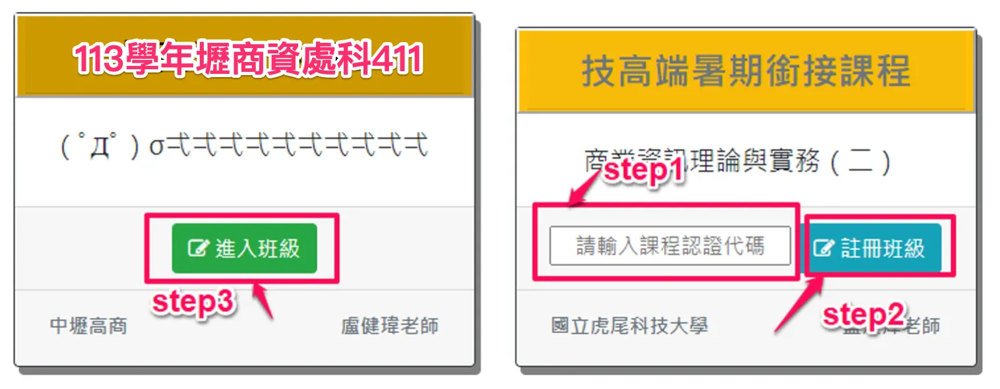
課堂作業會使用GoClass來進行撰寫，而在練習之外，我們會在我們的電腦安裝Python，下面看看怎麼安裝吧。
環境安裝
Python下載網址：https://www.python.org/downloads/
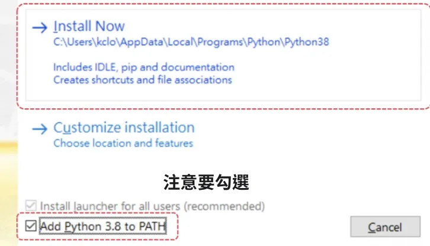
整合開發環境(IDE)是輔助程式人員開發系統的應用軟體。
Visual Studio Code
下載網址：https://code.visualstudio.com/download
左邊欄位可以做檔案管理、外掛管理
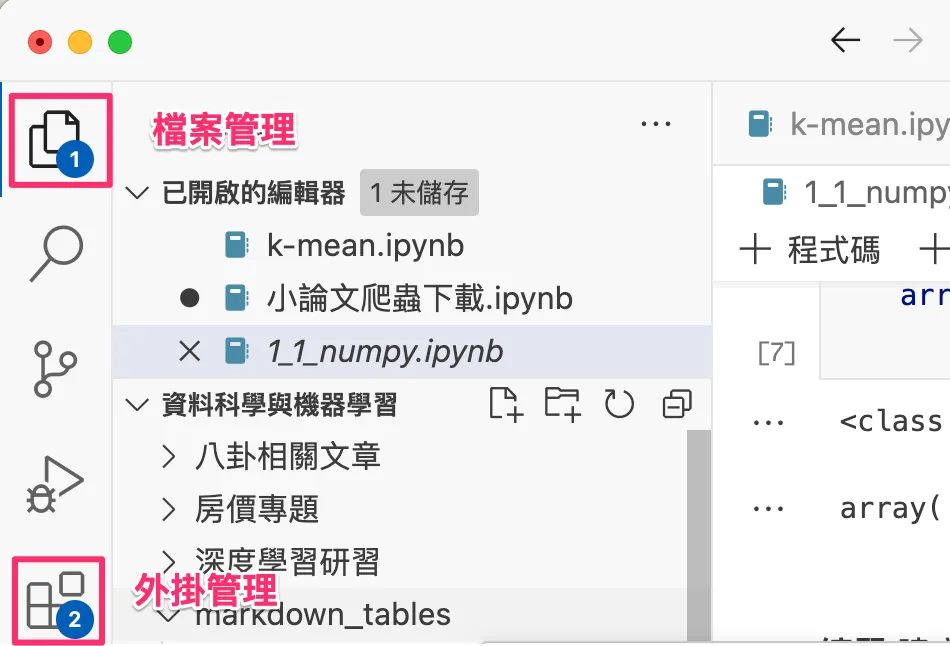
透過開啟資料夾選擇要儲存檔案的地方
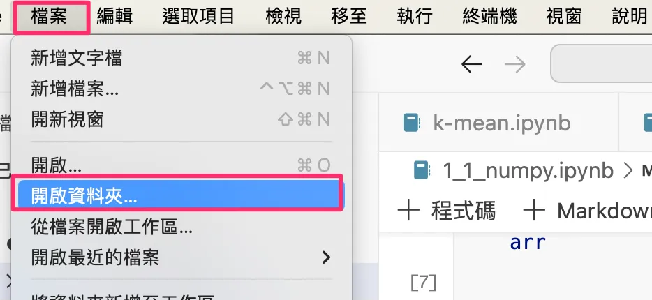
新增檔案，python的副檔名為.py
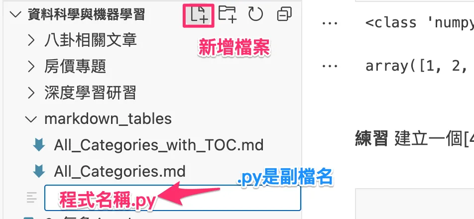
執行程式
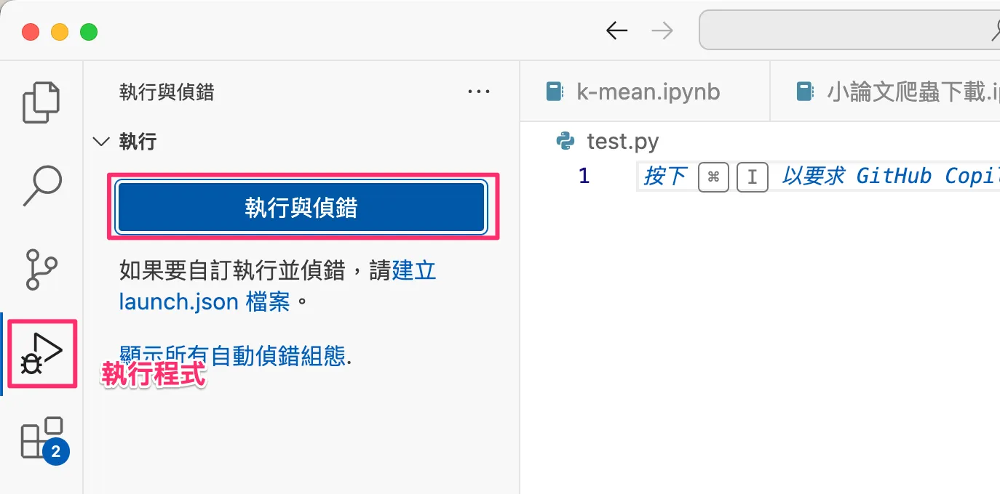
Colab編輯器
使用線上編輯器Colab：https://colab.research.google.com/
好處：資料放在雲端，容易保存，並且可做筆記本使用(在家也可輕易使用，有網路就可以)
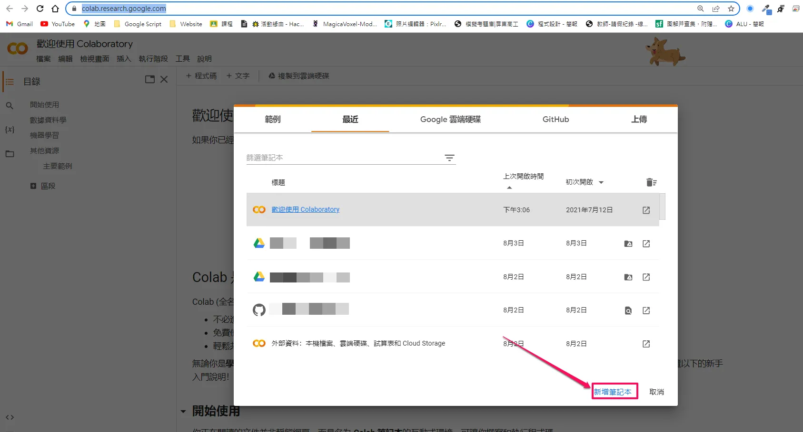
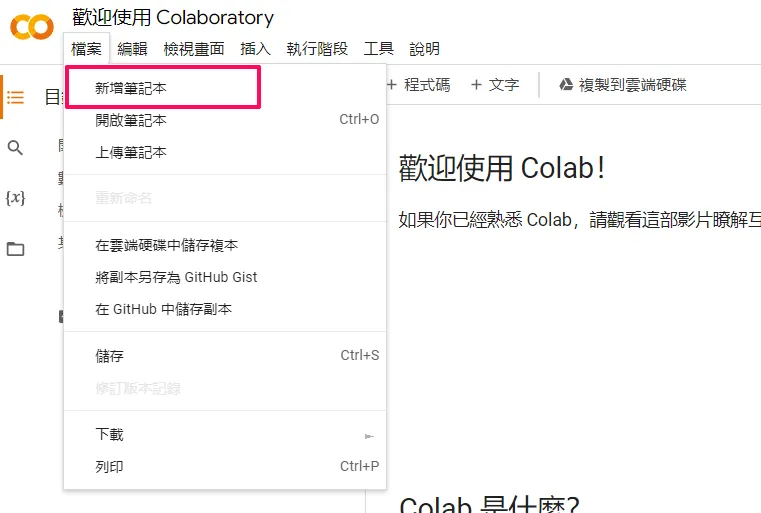

預期成果：
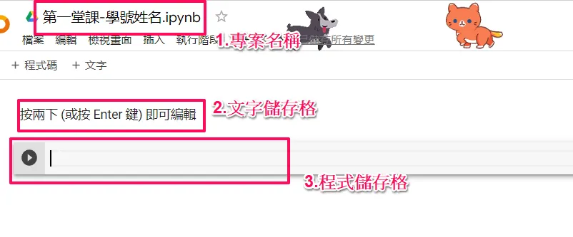